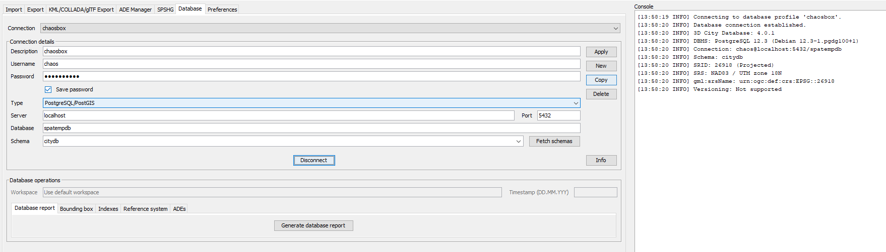
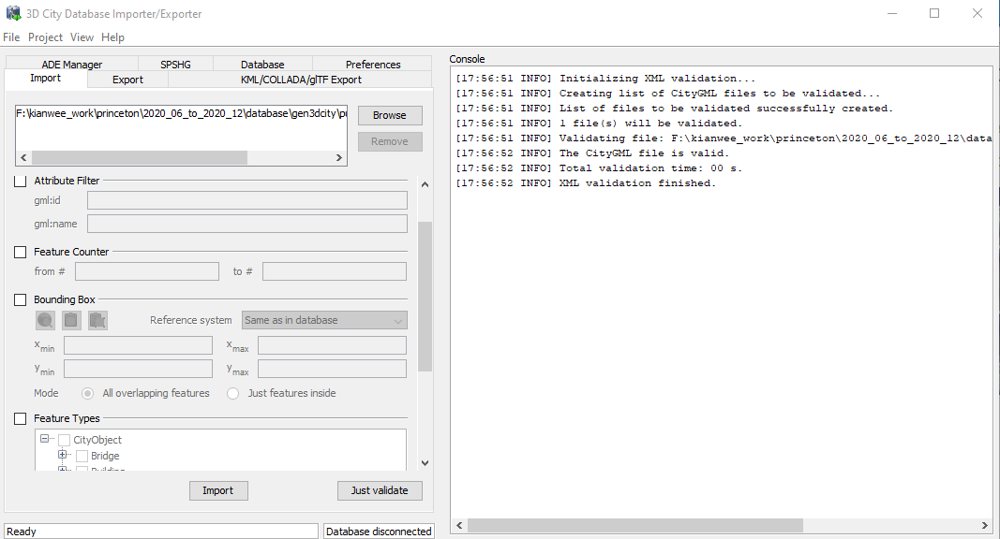

5. Import CityGML#
Refer to here for the full documentation of 3DCityDB.
5.1. Install Import/Exporter Tool on your Local Machine (Recommended).#
The instructions are based on this post.
Download the 3D City Database Importer/Exporter
a. You will need to install Java for the installer to work. Install Java here
Once installed you will need to connect to the database.
a. Make sure AllowTcpForwarding is set to yes in your ssh server config file (usually located at /etc/ssh/sshd-config)
b. Establish your ssh tunnel using: ssh -L [LOCAL_IP:]LOCAL_PORT:DESTINATION:DESTINATION_PORT [USER@]SSH_SERVER, e.g.ssh -L 5432:localhost:5432 user@chaosbox.com
c. Connect to the 3DCityDB instance using e.g. 3DCityDB Importer/Exporter using localhost:5432 as host and port.
 Fig. 5.1 Interface for importing a CityGML file.#
You can validate your CityGML file.
 Fig. 5.2 Interface for importing a CityGML file.#
{kind=link}
{kind=link}
5.2. Install Import/Exporter Tool on the Server.#
Install the 3DcityDB Importer/Exporter tool on your Docker host machine. Follow the instructions here.
Download the .jar file from 3DcityDB website with curl.
$ curl -L https://www.3dcitydb.org/3dcitydb/fileadmin/downloaddata/3DCityDB-Importer-Exporter-4.2.0-Setup.jar > 3dcitydb_impexp/3DCityDB-Importer-Exporter-4.2.0-Setup.jar
Install the OpenJDK to run the .jar installation file.
$ sudo apt install openjdk-14-jre-headless
Install the importer/exporter with this command.
$ sudo java -jar 3dcitydb_impexp/3DCityDB-Importer-Exporter-4.2.0-Setup.jar -console
a. Only install the following packages.
Select installation packages: [core] [required] [3dcitydb] [y/n] n [manual] [y/n] n [3d-web-map-client] [y/n] n [samples] [y/n] n [plugins] [y/n] y plugin.spreadsheet.generator [y/n] y plugin.ade-manager [y/n] y
You can start importing cityGML data based on the command line. Full documentation here. The easiest way to get a config_file.xml is to use the GUI to create the config file.
1. Run the Importer/Exporter with the graphical user interface (GUI). 2. Make all your settings in the GUI. 3. Save your settings to a local config file via the Project Save Project As… dialog from the main menu bar. 4. Make manual changes to the config file if required. 5. Feed this config file to the command line interface using the -config argument.
a. Once you have the config file specify it here and run this command to validate the cityGML file.
$ java -jar impexp-client-4.2.0.jar -shell -config /path/to/config_file.xml -validate /path/to/import_file.gml
b. a. Once you have the config file specify it here and run this command to import the cityGML file.
$ java -jar impexp-client-4.2.0.jar -shell -config /path/to/config_file.xml -import /path/to/import_file.gml
5.3. SQL for 3DCityDB - Check the Imported Data#
Show the names and height of the building.
select c.name,c.id,b.measured_height from cityobject c inner join building b on b.id = c.id ;
To check the geometry of the buildings.
select ST_AsGML(geometry) from surface_geometry where id=5;